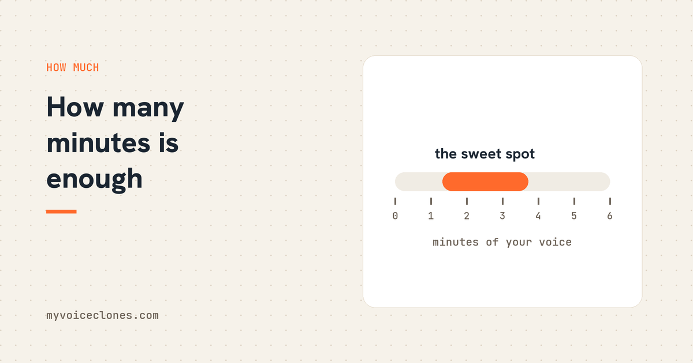

Instant voice cloning works from as little as 20 seconds, but 1 to 3 minutes of clean natural talking is the practical sweet spot. Beyond 3 minutes, extra audio only helps if the tool actually trains on your voice, where 3 to 10 clean minutes produces a near match.
When a customer's upload lands in my testing pile, the length tells me half the story before I press play. The 15 second clips come from people expecting magic, the 40 minute podcast rips come from people expecting that more is automatically better, and the truth sits in a narrower band than either group thinks. I have measured this properly, with a speaker verification model that scores how closely a clone matches the original speaker, so this article can give you numbers instead of vibes.
The short answer, with the reason
For an instant clone: 1 to 3 minutes. Modern engines technically work from 20 seconds, and the marketing of every tool on earth quotes that minimum because it sounds like magic. It does work. But a clone built from 20 seconds is thin, it captures your pitch and rough tone while missing the variety, how you sound asking a question versus landing a point versus trailing off. One to three minutes gives the engine enough different moments of you to pull from, and the improvement between 20 seconds and 2 minutes is obvious to anyone's ears.
For a trained clone: 3 to 10 clean minutes. Training, where the model actually adjusts its weights to your voice rather than imitating from a reference, feeds on more data. This is where longer recordings finally pay off.
Beyond that: quality beats quantity, always. Ten clean minutes beat forty noisy minutes every single time, and it is not close.
What the measurements showed me
The scoring model I use puts two different strangers at a similarity of roughly 0.27 to 0.52, so anything in that range means "not the same person." Here is what happened with real audio:
An instant clone from a good 1 to 3 minute reference of my own voice scores in the 65 to 85 percent range on the display scale I calibrated from those numbers. Genuinely recognizable as me, the kind where my brother would not question it on a casual listen, but I can hear the flatness in it.
A clone from a clean 30 second phone memo a tester sent scored 68 percent, and here is the interesting part, cutting and cleaning could not push it past 68. That is the honest ceiling of a short instant clone, and no setting rescues it, because the information simply is not in the recording.
The same voice after full training on a few minutes of audio: about 96 percent. That is the jump that no amount of extra reference length gives you without training, which is why VoiceClone's Make it perfect button exists, it trains on your own PC in under an hour.
And one more that changed how I build things: a clip ripped from a YouTube video, 31 seconds long, scored 70 percent, and after the junk inside it was cut, the background music seconds and the silence, leaving less audio but cleaner audio, it scored 86 percent. Less material, better clone. Read that again if you are about to upload a podcast episode whole.
Why more audio sometimes makes clones worse
The engine learns everything in the recording with equal enthusiasm. Your voice, yes, and also the room echo, the fan, the music bed, the other speaker who interjects for three seconds. A long messy recording does not average out to your voice, it averages in the mess.
This is exactly why VoiceClone refuses to be polite about your uploads. When you add a voice, it draws a strip along the audio, second by second, marking what is clear voice, what is usable, what is music or noise, and what is silence, and suggests the cut. You drag away the junk before the clone ever exists. That feature came directly from the YouTube rip test above, watching a 70 percent clone become an 86 percent clone purely through deletion convinced me nobody should clone from raw uploads.
Practical recipes by situation
You have 30 seconds of someone (with their permission) and cannot get more. Use it, expect a resemblance rather than a match, and do not fight the ceiling. It is what it is.
You are recording yourself fresh. Two to three minutes, quiet room, talking naturally about something you care about, breaths left in. This is the highest value ten minutes of the whole process, so I wrote a separate guide on the recording itself.
You plan to train. Collect 5 to 10 minutes across two or three sittings, same mic, same room. Variety of content helps, variety of acoustics hurts.
You have hours of podcast archive. Do not upload hours. Pick the cleanest few minutes, no crosstalk, no music, no phone quality segments, and use only those. The tool will thank you, or at least mine will show you a very green quality strip.
FAQ
Can you clone a voice from 10 seconds of audio?
Roughly, yes, some engines produce a recognizable pitch and tone from 10 to 15 seconds. But it will be a thin resemblance, noticeably flat in delivery. Twenty seconds is a realistic floor, and 1 to 3 minutes is where instant clones become convincing.
Is one minute of audio enough to clone a voice?
Yes, one minute of clean natural talking produces a solid instant clone in modern engines. Going to 2 or 3 minutes still helps. Past 3 minutes, improvements come from training on the audio, not from longer references.
Does more audio always make a better voice clone?
No. Clean audio makes better clones, longer audio only helps if it is equally clean and the tool trains on it. In my measured tests, cutting a 31 second clip down to its clean 16 seconds improved speaker match from 70 to 86 percent.
How much audio does professional voice cloning use?
Professional grade training pipelines typically want minutes to a few hours. For personal use, 3 to 10 clean minutes with real training gets you around a 96 percent speaker match, which is publishable quality for narration.
Do the two sitting version
Tonight, record two minutes of yourself in a quiet room. Tomorrow, record two more, same spot, same mic. Feed the first file to the free app for your instant clone, and keep the second in reserve, because when you decide the instant clone deserves the training run, you will already have the material ready and you will not touch the mic again.
Hear your own voice come back.
The free Windows app clones and fully trains one voice, yours, on your own PC. No account, no upload, and the download starts right away.